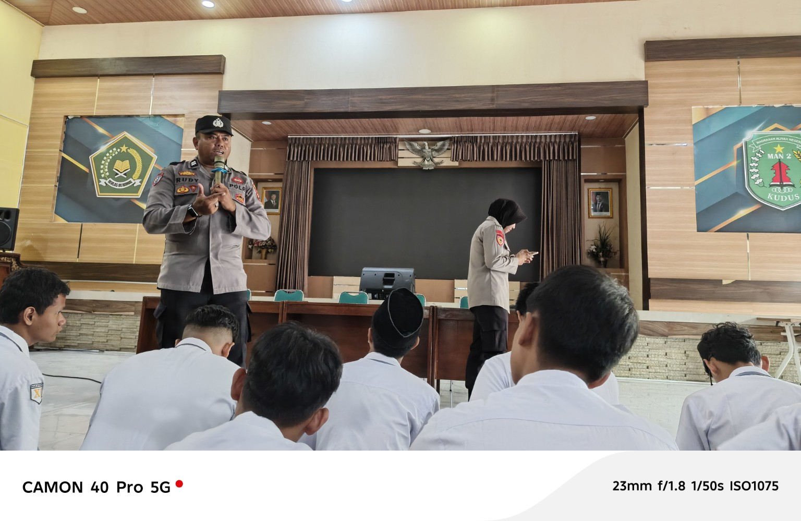
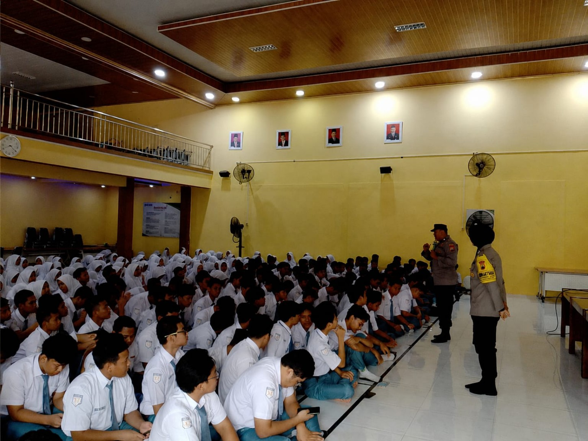

KUDUS — Polres Kudus melalui tim trainer bersama Senopati Academy memberikan edukasi mengenai pemanfaatan dan penggunaan kecerdasan buatan atau Artificial Intelligence (AI) kepada siswa MAN 2 Kudus. Kegiatan tersebut berlangsung di Auditorium MAN 2 Kudus pada Selasa, 25 Agustus 2026, dan diikuti oleh siswa kelas XI.
Edukasi tersebut bertujuan memberikan pemahaman kepada siswa mengenai potensi sekaligus bahaya penggunaan AI, khususnya dalam kegiatan pembelajaran. Selain mengenalkan pengetahuan dasar tentang AI, peserta juga diberikan pemahaman mengenai etika dalam menggunakan AI dan bermedia sosial.
Dalam kegiatan tersebut, pembelajaran tidak hanya dilakukan melalui penyampaian materi. Para siswa juga diajak mengikuti kuis serta permainan berbasis cerita interaktif yang berkaitan dengan keamanan dan bahaya di dunia siber. Metode tersebut membuat kegiatan berlangsung lebih interaktif dan mendorong siswa untuk berpikir kritis terhadap berbagai persoalan di dunia digital.
Merasa lebih tahu tentang pengetahuan dasar AI dan membuka wawasan lebih luas. Saya merasa terkesan, apalagi dengan memainkan sebuah game interaktif tentang bahaya siber.
— Ilyas, peserta kegiatanSalah satu Polwan Polres Kudus, Gladys, menyampaikan bahwa kegiatan tersebut juga membahas pentingnya etika dalam bermedia sosial maupun dalam penggunaan AI. Peserta mendapatkan modul yang berisi materi dan soal sebagai bagian dari kegiatan edukasi.
Antusiasme siswa terlihat selama kegiatan berlangsung. Salah satu peserta, Ilyas, mengaku mendapatkan wawasan baru mengenai AI setelah mengikuti kegiatan tersebut.
Menurut Ilyas, pemahaman mengenai AI penting bagi siswa seiring perkembangan teknologi yang semakin pesat. Ia menilai siswa perlu mengetahui cara memanfaatkan AI secara tepat agar tidak menggunakannya secara berlebihan maupun menyalahgunakannya.
“Karena zaman yang semakin berkembang, pemahaman terhadap teknologi perlu dikembangkan juga agar kita sebagai siswa dapat memanfaatkan dengan baik dan tidak menyalahgunakannya dengan tetap menjaga etika dalam menggunakan AI,” katanya.
Setelah mengikuti edukasi tersebut, Ilyas mengaku mengalami perubahan dalam menggunakan AI, terutama ketika mengerjakan tugas sekolah. Ia berusaha menggunakan AI sebagai alat bantu tanpa sepenuhnya bergantung pada teknologi tersebut.
“Saya menjadi lebih bertanggung jawab ketika memakai AI. Dalam mengerjakan tugas saya menjadi lebih seimbang dan tidak terlalu bergantung dengan pengerjaan AI,” tuturnya.
Menurut Ilyas, permainan cerita interaktif menjadi salah satu bagian yang paling menarik. Selain menghibur, permainan tersebut dinilai dapat melatih kemampuan berpikir kritis serta meningkatkan kewaspadaan terhadap berbagai bentuk kejahatan siber.
Ia juga menilai penggunaan AI tanpa memahami etika dapat menimbulkan berbagai persoalan, termasuk fitnah, kesalahpahaman, hingga penipuan yang dapat merugikan orang lain.
Melalui kegiatan tersebut, siswa diharapkan tidak hanya mampu memanfaatkan perkembangan AI, tetapi juga memahami batasan dan tanggung jawab dalam penggunaannya. Ilyas berharap pemahaman yang diperoleh dari kegiatan tersebut dapat diterapkan oleh siswa MAN 2 Kudus dalam kehidupan sehari-hari.
“Saya harap dampak yang saya rasakan memang meluas dan siswa-siswa MAN 2 Kudus ini bisa lebih bertanggung jawab saat memakai AI,” pungkasnya.
Selain mendapatkan materi dan pengalaman pembelajaran interaktif, para peserta juga memperoleh sertifikat. Kegiatan tersebut menjadi salah satu upaya untuk mendorong siswa agar lebih cakap, kritis, dan bertanggung jawab dalam menghadapi perkembangan teknologi digital dan AI.
Dokumentasi Kegiatan

